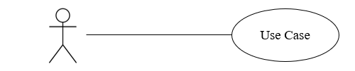
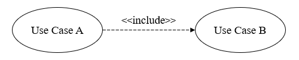
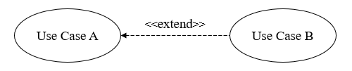
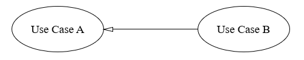
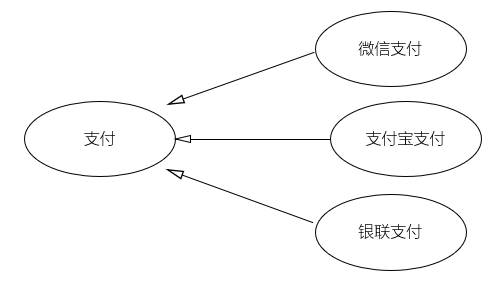
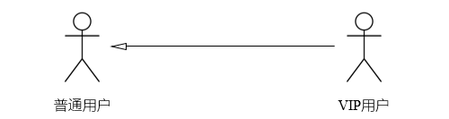
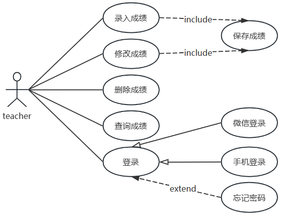

- 面向对象分析
- 从用户角度看/获取系统提供的服务
- 不关心设计细节
- 用户如何与系统交互
- 一般步骤
1. 确定系统范围 Scope
2. 确定系统边界 Boundary
3. 确定系统的参与者 Actor
4. 确定系统的用例 Case
- 参与者 Actor
- 名词
- 与系统发生交互的人员或其它系统、设备
- 使用系统
- 从系统获取信息
- 为系统提供信息
- 管理、维护、保障系统运行
- 使用小人表示
- 用例 Use Case
- 核心
- 动名词
- 一个系统包括多个用例
- 每个用例是系统向外提供的一个完整服务或功能
- 使用椭圆表示
- 关联 Communication Links
- 参与者和用例之间的驱动和反馈关系
- 实线 solid line：参与者和用例之间
- 虚线 dashed line：用例之间
1. 关联关系 Association
- 表示参与者和用例的关系
- 线型：无箭头实线

关联关系
2. 包含关系 Include
- 表示用例之间的关系：基本用例 Base Use Case和包含用例 Include Use Case的关系
- 必然要使用到
- 逻辑：A 发生的时候，B 一定发生。B 是 A 的一部分，抽离了 B，A 就不完整了
- 方向：从 基础用例/主流程 → 包含用例
- 线型：带箭头虚线 dashed line with an arrow

包含关系 Include
取款必须先验证密码，那么验证密码就是取款的包含关系
课程学习和权限：每次学习都必须检查权限
3. 拓展关系 Extend
- 表示用例之间的关系：基本用例 Base Use Case执行时，扩展用例 Extend Use Case 有时会执行，有时不执行
- 业务延申，非必须
- 逻辑：A 发生的时候，B 不一定发生。B 只是在特定条件下给 A 增加一点额外功能。抽离了 B，A 依然能独立跑通
- 方向：从扩展用例 → 基础用例/主流程
- 线型：带箭头虚线

拓展关系 Extend
取款时，打印凭条不是必须的
课程学习和充值：每次学习不一定都要充币
4. 泛化关系 Generalization
- 表示通用用例General Use Case和Specialized Use Case特殊用例的关系，也是被继承|Parent和继承Children的关系
- 也称归纳；继承
- 子用例继承父用例的行为和含义，并可以进行重写或特化
- 用例泛化：行为的复用/继承；
- 参与者可以：角色的复用/继承；子参与者是父参与者的一种
- 线型：实线空心三角箭头
- 方向：子类 → 父类

泛化关系 Generalization
用例泛化 Use Case Generalization
- 用户完成订单需要进行支付
- 支付的方式有很多种，比如“微信支付”、“支付宝支付”、“银行卡支付”等
- 父用例（泛化用例）： 支付
- 子用例（特化用例）： 微信支付、支付宝支付

泛化关系 Generalization
参与者泛化 Actor Generalization
- 普通用户和 VIP 用户

参与者泛化 Actor Generalization
综合运用

UML实例